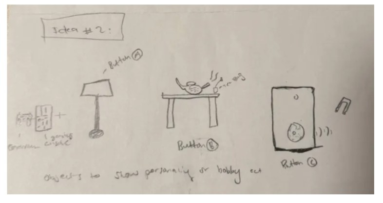
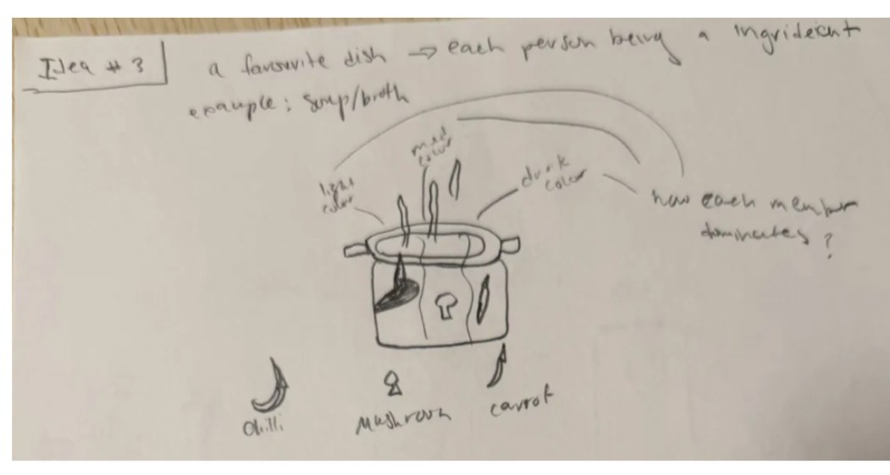
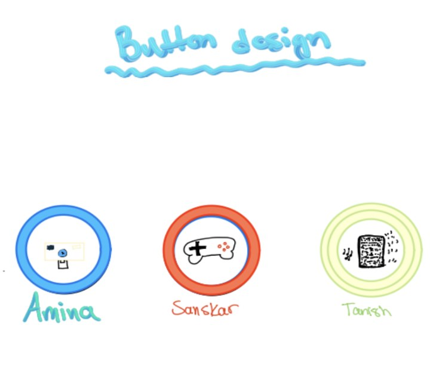
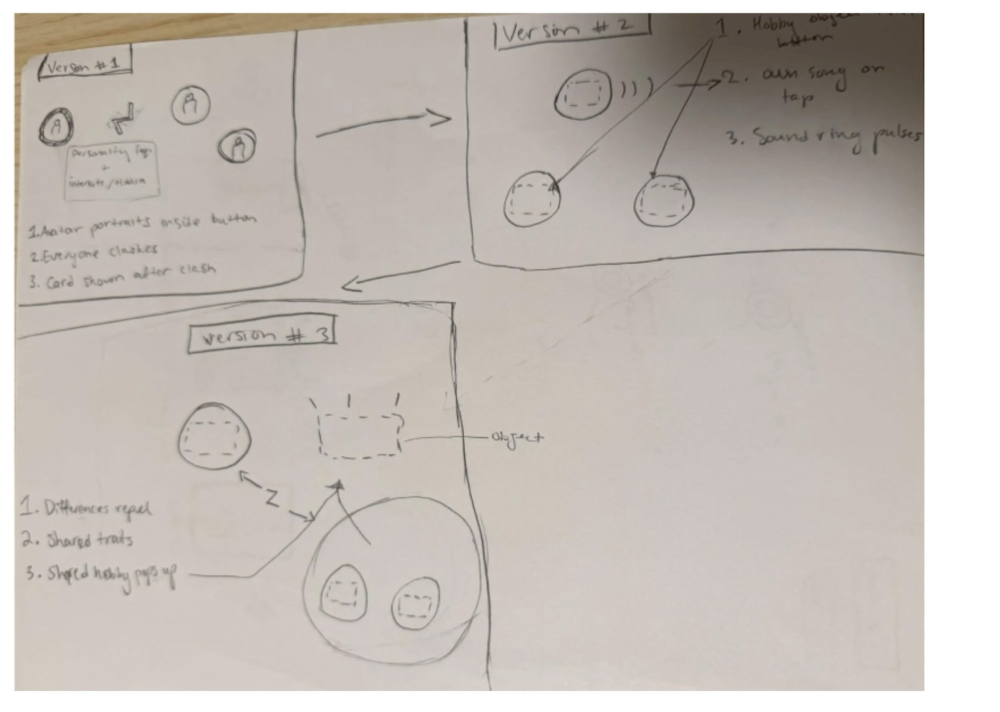
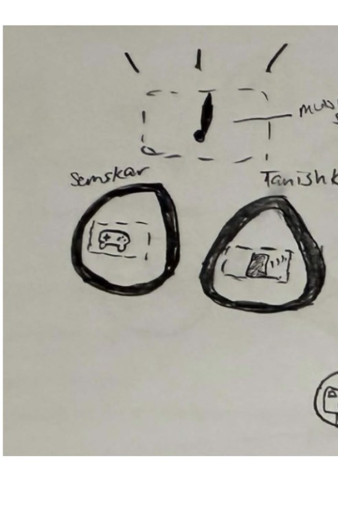
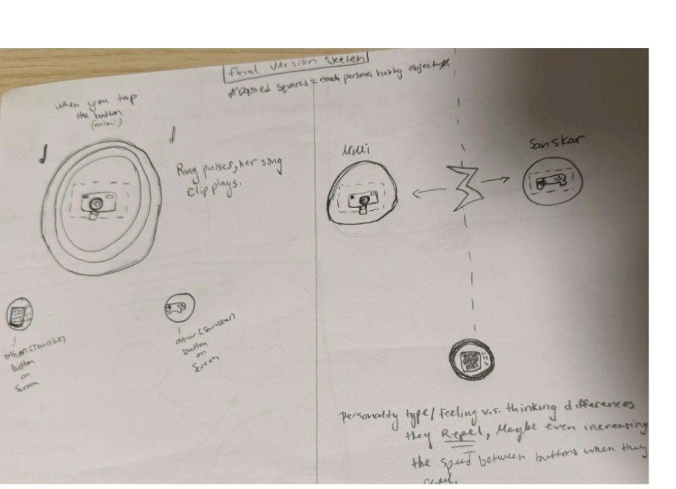
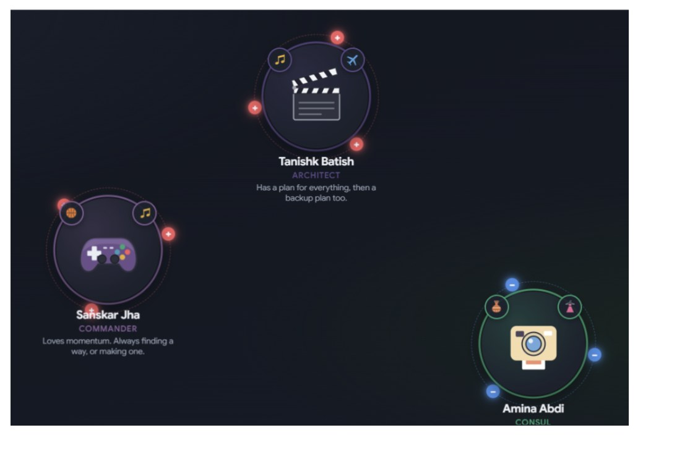

- Type
- Interactive web experience
- My role
- Sole designer
- Team
- Three people
- Built with
- React, TypeScript, physics engine
- Live
- Open the project
The brief, and the trap in it
The assignment was a family of buttons. The obvious answer is a tidy row of shapes that share a style, and the obvious answer is also the boring one, because a grid of buttons tells you nothing about the people behind it. I pushed early for a harder version of the problem: what if the buttons were us, and what if putting them on the same screen showed how we actually get along?
I owned the design end to end on this project. The concept, the visual system, and the interaction logic are all mine, from the first pencil sketch through to the direction I held during the build.
Diverging on paper first
I started with pencil and paper, not software. It's the fastest way I know to reject ten ideas cheaply. The first round was deliberately literal: everyday objects standing in for people, a lamp, a teapot, a speaker, a console.

Then I pitched the concept that reframed the whole project: the group as a pot of soup, each of us a different ingredient, a chilli, a mushroom or a carrot, with the steam carrying our personalities and the question of who dominates the flavour. It was far more abstract than anything else on the table, and it reframed the project from "three portraits" to "one system with three forces in it."

The move that unified it
Laying the sketches side by side, the problem was obvious: literal objects at different scales would look like clutter on one screen, and nothing would read as a family. I made the call to drop the objects entirely and unify on a single circular form, then win the personality back a different way, with one core icon per person at the centre and small badges orbiting the rim for everything a single hobby can't capture.
That gave us cohesion and individuality at once, and it's the structure the final product still ships with. I designed and drew the icon set for all three buttons myself on my iPad, so the team had a finished piece to build from rather than a description to interpret.

Designing the behaviour
A button that only looks like a person is still a picture. The interaction had to carry the idea, so I designed three versions on paper before anything was built: avatars that clash, hobby objects that respond to a tap, and finally the one that held: treat personality traits as magnetic charge. Differences repel, shared traits attract, and every collision reports back what it found.

I worked the attract case out specifically through music, with two buttons that share a taste drifting together and surfacing a shared-interest marker. I also designed the tap behaviour that pairs with it: press a button and its ring pulses while a clip of that person's song plays. Sound turned out to be the quickest way to make a flat circle feel like somebody.

The last sketch resolved the whole polarity system: what a tap does, what a clash does, and the detail I pushed for: that repulsion should accelerate as opposites get closer, so the screen reads as genuinely reluctant rather than politely bouncing.

Opposites attract, like charges repel, every hit flips one. Once the rule was that short, every interaction decision answered to it.
Carried into the build
I held the visual direction through implementation rather than handing off a drawing and walking away, reviewing each build, flagging what wasn't landing, and calling the changes. The pieces I drove hardest:
- The carousel on each personal page. A static grid of photos reads as a report; a carousel reads as someone showing you their pictures. It's the change that made the profiles feel personable, and it came together better than I'd hoped.
- The flip and its transition. Buttons flip polarity on contact, and the motion had to sell cause and effect. The flip is the moment the system explains itself without a word of copy.
- Music per person, on both the buttons and the profile pages.
- The personal page layout, with bio, gallery and personality data as a scrapbook rather than a dry profile.

What I took from it
That the strongest design decision on this project was a subtraction. Giving up the literal objects felt like losing the interesting part, and it was exactly what let the personality come back as structure, a shared form, a core icon, an orbit, instead of as decoration. I also learned how much further a finished sketch travels than a description: the team agreed in minutes on things we'd argued about for an hour, once I put something on paper to point at.